3．代数与几何
草片文书中有求一个未知量问题的解法，这个问题大体上相当于今日的一元一次方程。不过用的方法纯粹是算术的，并且在埃及人心目中这并不成其为一门独特的学科——解方程。问题是用文字叙述的，仅告诉得出解的步骤，不说明为什么用这些方法，也不说明为什么这些方法能行。例如阿梅斯草片文书中的第31题，直译出来是：“一个数量，它的2/3，它的1/2，它的1/7，它的全部，加起来总共是33。”用我们的记号就是
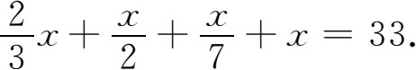
这个题只要用埃及人的简单算术就可解出。
草片文书中的第63题如下：“把700块面包分发给四人，第一人2/3，第二人1/2，第三人1/3，第四人1/4。”这对我们来说就是
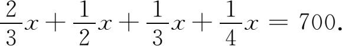
阿梅斯给出的解法是这样的：“把
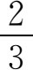
，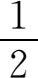
，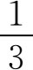
，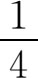
加起来，得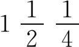
。以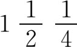
除1，得。现求700的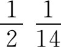
。这是400。”在解有些问题时，阿梅斯用了“错位法则”。例如，为定出算术数列中的五个数，需使它们的和等于100，阿梅斯先取公差d为最小那个数的
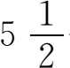
倍。然后他把其中最小的数取为1，于是得数列1，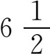
，12，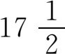
，23。但这些数相加得60而所需的和应是100。于是他把各项乘以5/3。草片文书中只涉及最简单的二次方程如
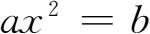
。即使在出现两个未知量时，方程的类型也是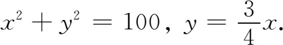
所以消去y后，x的方程仍是前述类型。草片文书中也可看到牵涉算术数列和几何数列的具体问题。从所有这些问题及其解法中，我们不难推知他们所用的一般法则。
在埃及人有限的代数里实际上没有成套的记号。在阿梅斯草片文书中，加法和减法用一个人走近和走开（来和去）的腿形
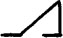
和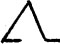
来表示，记号用来表示平方根。埃及人的几何是怎样的呢？他们并不把算术和几何分开。草片文书中都有这两方面的问题。埃及人也像巴比伦人那样，把几何看作实用工具。他们只是把算术和代数用来解有关面积、体积及其他几何性质的问题。据希腊历史学家希罗多德说，埃及是因为尼罗河每年涨水后需要重定农民土地的边界才产生几何的。但巴比伦人并无这种需要却也在几何上作出同样多的贡献。埃及人有计算矩形、三角形和梯形面积的死方法。就计算三角形面积而论，他们虽用一数乘以另一数的一半来做，但我们不能肯定这方法是否正确，因从题中所用的字语不能肯定相乘的两个长度代表底和高还是只代表两条边。又由于图画得很不清，使人不能确定究竟所求的是哪块面积或哪块体积。他们对圆面积的计算好得惊人，用的公式是
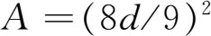
，其中d是直径。这就等于取π为3.1605。略举一例便可说明埃及人的面积公式多么“准确”。在埃德富（Edfu）一个庙宇的墙上刻有一个捐献给庙宇的田地表。这些田地一般有四边，今将其记之为a，b，c，d，其中a与b以及c与d是两批相对的边。铭文给出的这些田地的面积是
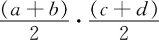
。但有些田地是三角形的，这时他们认为d就没有了，面积的算法变成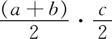
。即使对四边形来说，这种算法也只是粗略的近似。埃及人也有算立方体、箱体、柱体和其他图形体积的法则。有些法则是对的，有些只是近似。草片文书中给出的一个截锥水钟的体积，用我们的记号是
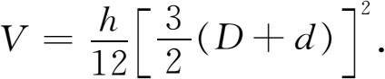
这里h是高，
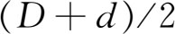
是平均周长。这个公式相当于取π为3。埃及几何里最了不起的一个法则是计算截棱锥体的体积公式。锥体的底是正方形，这公式用现代的记号是
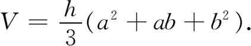
其中h是高，a和b是上下底的边。这公式之所以了不起，乃是因为它正确，而且表达的形式是对称的（当然不是用我们的记法）。它只是用具体数字写出的。不过我们并不知道棱锥体的底是否确为正方形，因为草片文书中的图作得很马虎。
我们也不知道埃及人是否认识到毕达哥拉斯定理。我们知道他们有拉绳人（测量员），但所传他们在绳上打结，把全长分成长度各为3比4比5的三段，然后用来形成直角三角形之说，则从未在任何文件上得到证实。
他们的法则并不用记号表示。埃及人是用语文来表述数学问题的；他们的解题步骤基本上同我们在套公式进行计算时的做法一样。例如，对于求截棱锥体体积这样一个几何问题，如果大体上逐字逐句译出来便是：“若有人告诉你说，有截棱锥，高为6，底为4，顶为2。你就要取这4的平方，得结果为16。你要把它加倍，得结果8。你要取2的平方，得4。你要把16，8和4加起来，得28。你要取6的三分之一，得2。你要取28的两倍，得56。你看，它等于56。你可以知道它是对的。”
埃及人究竟懂不懂证明，或者懂不懂他们的算法和公式需要有根据？有一种说法认为阿梅斯草片文书是按教科书格式写给当时学生学习用的，因此虽然阿梅斯在解一些类型的方程时没有叙述一般法则，但很可能他懂得这些法则，但想让学生自己去体会出这些法则，或者想让教师教给他们。按照这种观点，阿梅斯草片文书是颇为高深的算术课本。别的一些人又说这是一个学生的笔记本。不管怎样，几乎可以肯定地说，草片文书中所载的问题是当时的商业人员和行政管理人员应该解决的那类问题，而求解的方法则是从工作经验中得出的实用法则。谁也不会相信埃及人有一种依据可靠公理形成的演绎结构，来证明他们所用的法则是正确的。